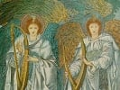

The Book of Enoch, by R.H. Charles, [1917], at sacred-texts.com
LXXVI. The Twelve Windows and their Portals.
CHAPTER LXXVI.
1 And at the ends of the earth I saw twelve portals open to all the quarters (of the heaven), from which the winds go forth and blow over the earth. 2. Three of them are open on the face (i.e. the east) of the heavens, and three in the west, and three on the right (i.e. the south) of the heaven, and three on the left (i.e. the north). 3. And the three first are those of the east, and three are of †the north, and three [after those on the left] of the south†, and three of the west. 4. Through four of these come winds of blessing and prosperity, and from those eight come hurtful winds: when they are sent, they bring destruction on all the earth and on the water upon it, and on all who dwell thereon, and on everything which is in the water and on the land.
5. And the first wind from those portals, called the east wind, comes forth through the first portal which is in the east, inclining towards the south: from it come forth desolation, drought, heat, and destruction. 6. And through the second portal in the middle comes what is fitting, and from it there come rain and fruitfulness and prosperity and dew; and through the third portal which lies toward the north come cold and drought.
7. And after these come forth the south winds through three portals: through the first portal of
them inclining to the east comes forth a hot wind. 8. And through the middle portal next to it there come forth fragrant smells, and dew and rain, and prosperity and health. 9. And through the third portal lying to the west come forth dew and rain, locusts and desolation.
10. And after these the north winds: from the seventh portal in the east come dew and rain, locusts and desolation. 11. And from the middle portal come in a direct direction health and rain and dew and prosperity; and through the third portal in the west come cloud and hoar-frost, and snow and rain, and dew and locusts.
12. And after these [four] are the west winds: through the first portal adjoining the north come forth dew and hoar-frost, and cold and snow and frost. And from the middle portal come forth dew and rain, and prosperity and blessing; and through the last portal which adjoins the south come forth drought and desolation, and burning and destruction. 14. And the twelve portals of the four quarters of the heaven are therewith completed, and all their laws and all their plagues and all their benefactions have I shown to thee, my son Methuselah.